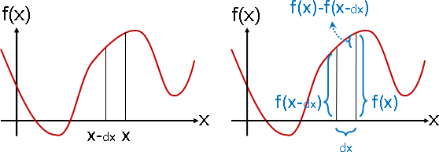
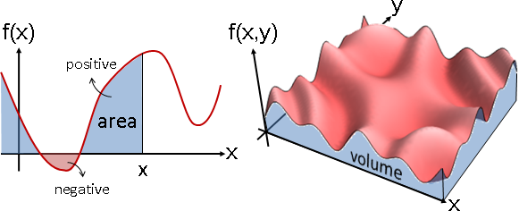

Function
Numeric Function

函數的概念，請參考本站文件「Function」。此處僅專注於有著數值、有得計算的函數。
函數就和實數、複數、餘數一樣，有著各種運算。以下將介紹函數的運算：求值、代入、加、減、乘、除、複合、微、積。
Numeric Array

陣列（一維版本是數列）可以想成是函數的離散版本。
求值（evaluation）

給定輸入數值，計算輸出數值。
把函數寫成程式碼，電腦就會幫你算好了。
附帶一提，函數需要求值，但是陣列不需要求值。陣列的輸出數值皆儲存於記憶體，不必特地求值。
代入（substitution）
輸入變數替換為其他變數。
s = x - 2
sin x cos y t = 2y sin(s + 2) cos(t / 2)
f(x, y) = ----- + ----- ===========> f(s, t) = ---------- + ----------
y x t / 2 s + 2
數學當中，求值和代入沒有分別。計算學當中，求值和代入是兩回事！求值是Numerical Computation，代入是Symbolic Computation。
Function可以畫成圖形
繪製函數圖形，就會用到求值。窮舉各種輸入，分別計算輸出，把輸入與輸出化作座標位置。
一元函數和二元函數容易作圖，三元函數就只能用空氣濃度來呈現函數值了，四元以上只能用幻想的。

加減乘除（arithmetic）

如果經常要把兩個函數的輸出加在一起，可以預先把兩個函數加在一起，節省計算時間！
兩個函數 f(x) = x^2 + x + 1 g(x) = -x + 2 輸入數值是1的時候，計算所有函數輸出數值的總和 f(1) = 1^2 + 1 + 1 = 3 g(1) = -1 + 2 = 1 f(1) + g(1) = 3 + 1 = 4 輸入數值是2的時候，計算所有函數輸出數值的總和 f(2) = 2^2 + 2 + 1 = 7 g(2) = -2 + 2 = 0 f(2) + g(2) = 7 + 0 = 7
如果預先讓函數相加的話
(f + g)(x) = f(x) + g(x)
= (x^2 + x + 1) + (-x + 2)
= x^2 + 3
那麼就可以節省計算時間
(f + g)(1) = 1^2 + 3 = 4
(f + g)(2) = 2^2 + 3 = 7
輸入越多種、函數越多個，節省越多時間！
用抽象的、簡潔的數學符號表達函數相加：
f + g
用直觀的、亮麗的函數圖形表達函數相加：

減法、乘法、除法的概念都與加法相仿，就不多提了。
延伸閱讀：Additive Function
離題一下。熟悉數學的讀者，想必馬上聯想到「函數的加法性」，然而它是談輸入相加，跟前面談的函數相加是兩回事。
函數加法 function addition: y1 = f(x) y2 = g(x) y1 + y2 = f(x) + g(x) = (f + g)(x) 函數的加法性 additive function: y1 = f(x1) y2 = f(x2) if additive y1 + y2 = f(x1) + f(x2) =========== f(x1 + x2)
不熟悉數學的讀者，就當作沒看到這段吧！
複合（composition）

如果輸入經常接連地用函數變換兩次，可以預先把兩個函數複合在一起，節省計算時間！
兩個函數 f(x) = x^2 + x + 1 g(x) = -x + 2 輸入數值是1的時候，計算先經過g函數、再經過f函數的輸出數值 g(1) = -1 + 2 = 1 f(g(1)) = f(1) = 1^2 + 1 + 1 = 3 輸入數值是2的時候，計算先經過g函數、再經過f函數的輸出數值 g(2) = -2 + 2 = 0 f(g(2)) = f(0) = 0^2 + 0 + 1 = 1
如果預先讓函數複合的話
(f ∘ g)(x) = f(g(x))
= (-x + 2)^2 + (-x + 2) + 1
= x^2 - 5x + 7
那麼就可以節省計算時間
(f ∘ g)(1) = 1^2 - 5 + 7 = 3
(f ∘ g)(2) = 2^2 - 10 + 7 = 1
輸入越多種、函數越多個，節省越多時間！
用抽象的、簡潔的數學符號表達函數複合：
f ∘ g
用直觀的、亮麗的函數圖形表達函數複合：
到底要怎麼畫啊？這畫的出來嗎？
延伸閱讀：Recursive Function【尚未成為專有名詞】
離題一下。熟悉數學的讀者，想必馬上聯想到「遞迴函數」。沒錯，遞迴函數的本質就是同一個函數複合好幾次！
A recursive function f: f(0) = 5 f(x) = 2 * f(x-1) + 1 Let g(y) = 2 * y + 1 f(0) = 5 f(1) = g(5) f(2) = g(g(5)) f(3) = g(g(g(5)))
微分（differentiation）
請讀者先參考本站文件「Sequence」提及的離散版本。此處介紹的是連續版本，只多了個dx：一個無限微小、略大於零的數值。
微分運算是相鄰數字差，通通除以dx。
微分運算的結果叫做「導數derivative」，就好比除法運算的結果叫做商數。
用抽象的、簡潔的數學符號表達函數微分：
d -- f 輸入變數剛好一個 dx ∂ -- f 輸入變數大於一個 ∂x
用直觀的、亮麗的函數圖形表達函數微分：
當輸入變數只有一個，導數是座標(x,f(x))的「斜率slope」。當輸入變數有許多個，各個輸入變數分別求得斜率，合稱「梯度gradient」。

積分（integration）

積分運算是從負無限大開始的連續數字和，通通乘以dx。
積分運算的結果叫做「積分integral」，中文翻譯撞名了！
用抽象的、簡潔的數學符號表達函數積分：
∫ f dx
用直觀的、亮麗的函數圖形表達函數積分：
當輸入變數只有一個，積分是左至-∞、右至x、下至0、上至f(x)，四個邊界所包圍的「面積area」，面積可正可負。當輸入變數有許多個，各個輸入變數一齊累計，得到「容積volume」。
積分運算最簡單的演算法是Rectangle Rule：按照定義來，將面積切割成數條寬度為dx的矩形。
然而，左至負無限大，演算法永不結束，怎麼辦？解決方式是增設左邊界，想訂多少就多少。數學家把「自訂左右邊界的積分運算」的結果叫做「定積分definite integral」。
對計算學家來說，定積分就是區間和啦。前綴和改成區間和，就這樣而已。

矩形畢竟不是無限薄。當函數是斜線，仍有縫隙。只好改用Trapezoidal Rule：將面積切割成數條寬度為dx的梯形。

當函數是曲線，仍有縫隙。只好改用Parabolic Rule又稱Simpson's Rule：梯形的斜邊改成拋物線。

長方形的邊是零次、梯形的斜邊是一次、拋物線是二次。當函數是三次曲線，仍有縫隙。無論如何修正，只要函數是更高次曲線就仍有縫隙，況且運算量也更大了。只好改用Adaptive Simpson's Rule：dx最初是b-a；當縫隙太大，就讓dx變成一半。

有些區間已經幾乎沒有縫隙，大可不必再切半。

函數起起伏伏，難以估量縫隙大小。只好比較前後算得的面積，當面積差異足夠小，就推定面積已經足夠準確、足夠穩定了。

UVa 1356 ICPC 3001